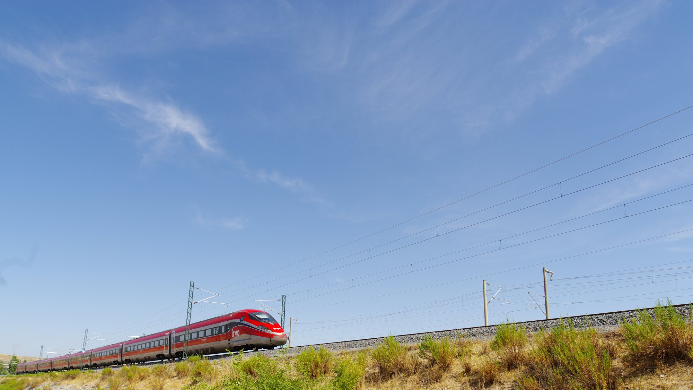
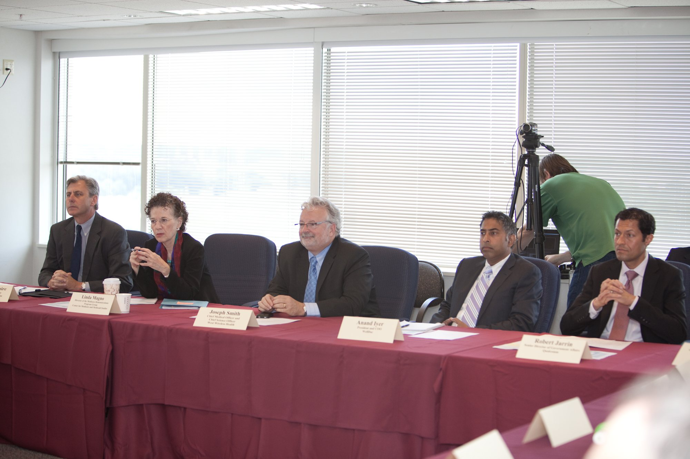

Mercoledì 28 ottobre 2026, alle 8:53, un AVE di Renfe tampona un treno di Iryo fermo sulla linea ad alta velocità Madrid-Siviglia, tra Los Yébenes e Urda, in provincia di Toledo. È uno degli incidenti ferroviari più gravi della storia recente spagnola. Nelle ore successive, mentre i soccorsi lavorano sul posto, gli operatori Orange e Movistar fanno una cosa che fino a poco tempo fa sarebbe sembrata fantascienza: chiedono ai satelliti Starlink di fare da rete cellulare per i telefoni comuni della zona.
Che cosa è successo a Urda
Le prime ricostruzioni parlano di un treno di Iryo fermo sulla linea e di un AVE che lo raggiunge da dietro. Le vittime accertate nelle prime ore sono più di sessanta e i feriti molti di più; le cifre restano provvisorie. Il ministro dei Trasporti Óscar Puente ha definito «absolutamente inverosímil» un tamponamento sulla rete ferroviaria spagnola e ha riferito di un guasto informatico al sistema di controllo LZB della zona, caduto verso le 8:30 per un errore di comunicazione tra computer. Le cause precise non sono ancora state stabilite e non sono il tema di questa pagina, che si occupa di un aspetto più piccolo ma concreto della risposta all’emergenza: le comunicazioni.
In un incidente del genere il telefono diventa uno strumento di soccorso. Lo usano i passeggeri per farsi trovare e per avvisare le famiglie, lo usano i soccorritori per coordinarsi, lo usano i parenti che corrono verso la zona. Ma l’area dell’incidente, in aperta campagna della Mancia, si è trovata con la rete a terra danneggiata e sotto pressione: migliaia di persone concentrate in pochi chilometri quadrati, e diverse antenne spente.

Dodici antenne fuori uso, e il satellite prende il loro posto
In una lettera firmata da Eduardo Rodríguez, direttore dei servizi digitali di Orange, l’operatore spiega che dodici stazioni radio nella zona dell’incidente sono fuori servizio e che il Ministero per la Trasformazione Digitale ha autorizzato l’attivazione di Starlink Direct to Cell sulle stesse frequenze già usate in passato. In Castilla-La Mancha quelle frequenze appartengono a Telecom CLM, l’operatore regionale: per accendere il servizio serviva quindi un via libera pubblico rapido, ed è arrivato in giornata. Una delle ipotesi sulla caduta delle antenne è la rottura dei cavi in fibra che le collegano alla rete.
Orange aveva già comunicato di aver portato sul posto unità mobili e di aver rafforzato la rete per facilitare il lavoro dei soccorritori. L’amministratore delegato di Orange España, Meinrad Spenger, ha scritto che i team stavano lavorando «para reforzar la conectividad móvil y wifi y apoyar a los servicios de emergencia». La copertura satellitare si aggiunge a queste misure: non sostituisce la rete a terra, che in parte resta attiva, ma offre uno strato in più dove il segnale manca o è saturo.
Con Starlink Mobile i clienti Orange e Movistar della zona, con un normale telefono LTE compatibile, possono mandare e ricevere SMS e usare dati per alcune app: messaggi e chiamate su WhatsApp, Google Maps. Il servizio è gratuito. Non servono antenne o terminali dedicati: il telefono si collega direttamente a un satellite che a bordo ha un modem capace di comportarsi come una stazione base cellulare. L’unica condizione è avere il cielo libero sopra la testa, cosa che in aperta campagna non manca.

La conferma di Starlink e la risposta di Musk
Nella notte tra il 28 e il 29 ottobre, poco dopo la mezzanotte italiana, l’account ufficiale di Starlink su X conferma: Starlink Mobile fornisce connettività gratuita ai clienti di Orange e Telefónica colpiti dal «devastating train collision in Spain». Famiglie, comunità e imprese con telefoni LTE compatibili, scrive l’azienda, possono restare in contatto tramite app e messaggi anche quando le torri cellulari sono a terra. Qualche ora più tardi Elon Musk rilancia il post con due sole parole: «Standard practice». Pratica standard, cioè ciò che SpaceX intende fare ogni volta che una catastrofe spegne le reti tradizionali.
Non è una frase vuota. In Spagna è la seconda volta in pochi mesi. A fine luglio 2026, durante i grandi incendi nel centro del Paese, Starlink aveva acceso la stessa copertura per i clienti di Movistar/O2, Orange e dei marchi collegati: oltre 270.000 utenti si erano collegati ai satelliti e la rete aveva consegnato 625.000 SMS. In quell’occasione Starlink aveva chiesto al governo spagnolo di autorizzare il servizio in modo stabile, invece che caso per caso. A Urda l’attivazione è stata più rapida proprio perché operatori, ministero e SpaceX avevano già percorso quella strada.
Perché conta oltre la tragedia
Il punto debole delle reti mobili è noto: le antenne dipendono da corrente elettrica e fibra, e quando un incendio, un’alluvione o un incidente le colpisce, la copertura sparisce proprio dove serve. Il direct-to-cell rovescia il problema, perché la «torre» è in orbita bassa e non viene toccata da quello che succede a terra. Oggi la capacità è limitata, adatta a messaggi e app leggere più che a video o chiamate tradizionali, ma il principio è dimostrato sul campo, in Europa, con telefoni comuni.
Resta un nodo normativo. In Europa il servizio non è ancora autorizzato in modo permanente: ogni attivazione richiede un permesso d’emergenza sulle frequenze di un operatore terrestre. È la differenza tra un’ancora di salvezza da accendere a mano e un servizio sempre disponibile, e il caso di Urda riaprirà quasi certamente il dibattito spagnolo.

Lo stesso giorno, a Washington: il voto FCC sullo spettro
Il tema delle regole arriva al pettine proprio oggi, dall’altra parte dell’Atlantico. Nella riunione pubblica del 29 ottobre la FCC esamina una proposta di regolamento (una Notice of Proposed Rulemaking) voluta dal presidente Brendan Carr per modernizzare le norme sulla Supplemental Coverage from Space, cioè la copertura satellitare dei telefoni su spettro cellulare. La bozza renderebbe disponibili altri 482 MHz di spettro, portando le bande ammesse da cinque a tredici. Soprattutto, eliminerebbe l’obbligo per l’operatore satellitare di affittare lo spettro da tutti gli operatori terrestri della stessa banda: basterebbe certificare accordi di coesistenza nell’area servita, oppure possedere direttamente la licenza terrestre.
Per SpaceX è un dettaglio decisivo. Con lo spettro acquistato da EchoStar e l’accordo per le licenze a 800 MHz di Grain Management, Starlink Mobile punta a diventare un operatore a pieno titolo negli Stati Uniti, e quella seconda strada le si adatta su misura. Il 23 ottobre l’azienda ha chiesto di aggiungere anche la banda 902-928 MHz, perché «doing so now saves time later», e di allineare le regole per i satelliti a quelle delle reti terrestri.
AT&T, Verizon e T-Mobile chiedono l’opposto. Tramite l’associazione CTIA vogliono togliere dalla proposta le bande a 2,5 GHz e 3,45 GHz, 290 dei 482 MHz in gioco, sostenendo che servono circa 300 milioni di utenti e che l’uso satellitare lì non è tecnicamente fattibile. T-Mobile, che resta partner di lancio di Starlink Mobile negli USA, sostiene che le interferenze potrebbero cancellare fino al 96% dell’area coperta in uplink da una cella. Il capo di Verizon, nella teleconferenza sui conti di lunedì, ha detto che Starlink Mobile «just can’t compete with a terrestrial network».
Il voto di oggi non chiude la partita: adottare la proposta apre un periodo di commenti pubblici, e le regole definitive arriveranno più avanti. Sullo sfondo, il 27 ottobre la FCC ha approvato l’acquisizione di Globalstar da parte di Amazon per 11,6 miliardi di dollari, che dà al futuro servizio direct-to-device di Amazon uno spettro satellitare proprio.
Che cosa aspettarsi adesso
In Spagna conteranno i dati: quanti utenti si collegheranno ai satelliti nella zona di Urda e per quanto resterà attiva la copertura, e se il governo trasformerà le autorizzazioni d’emergenza in un quadro stabile. Negli Stati Uniti, nel pomeriggio italiano, si saprà se la FCC adotta la proposta e con quali bande. Il dossier su Ship 42 e sugli static fire di Flight 15 passa all’archivio Notizie: oggi la notizia SpaceX più concreta non è un razzo, ma un SMS che parte da un campo della Mancia e passa per l’orbita bassa.
Fonti pubbliche e tracce
Ultimo aggiornamento editoriale: 29 ottobre 2026, 9:30 ora italiana. Nel corpo non si ripete la fonte a ogni frase: le tracce sono raccolte qui. Bilancio delle vittime e cause dell’incidente restano provvisori.
- Starlink su X, 28 ottobre 2026 (23:37 UTC): connettività gratuita di Starlink Mobile ai clienti Orange e Telefónica colpiti dall’incidente ferroviario.
- Elon Musk su X, 29 ottobre 2026: «Standard practice», in risposta al post Starlink.
- BandaAncha, Joshua Llorach, 28-29 ottobre 2026: lettera di Orange su 12 stazioni fuori servizio, autorizzazione del Ministero, frequenze Telecom CLM, servizi disponibili, precedente degli incendi di luglio.
- ADSLZone, 28 ottobre 2026: attivazione di Starlink da parte di Movistar e Orange nella zona dell’incidente.
- PressDigital, 28 ottobre 2026: comunicato Orange e dichiarazione di Meinrad Spenger.
- GSMonline, 28-29 ottobre 2026: funzionamento Direct to Cell; dati di luglio (oltre 270.000 clienti, 625.000 SMS).
- RTVE, 28 ottobre 2026: dinamica dell’incidente, orario, dichiarazioni del ministro Óscar Puente sul sistema LZB.
- FCC, October 2026 Open Commission Meeting: ordine del giorno del 29 ottobre, proposta su 482 MHz per la Supplemental Coverage from Space.
- Teslarati, Gene, 28 ottobre 2026: richieste di AT&T, Verizon e T-Mobile su 2,5 e 3,45 GHz, deposito SpaceX del 23 ottobre sulla banda 902-928 MHz, dichiarazioni Verizon, approvazione Amazon-Globalstar.
Fotografie utilizzabili
Non esistono ancora foto a licenza libera della copertura Starlink a Urda, e né Starlink né SpaceX hanno pubblicato immagini dell’intervento. Tutte e quattro le foto sono quindi d’archivio a licenza libera: lancio Starlink 12-4 (U.S. Space Force, pubblico dominio), treno Iryo a Madrid (CC BY-SA 4.0), stack Starlink SpaceX (CC0), riunione nella sede FCC (pubblico dominio). Dettagli in scheda dei crediti fotografici.
Apri il dossier Ship 42 archiviato · Archivio Notizie · Torna a SpaceX